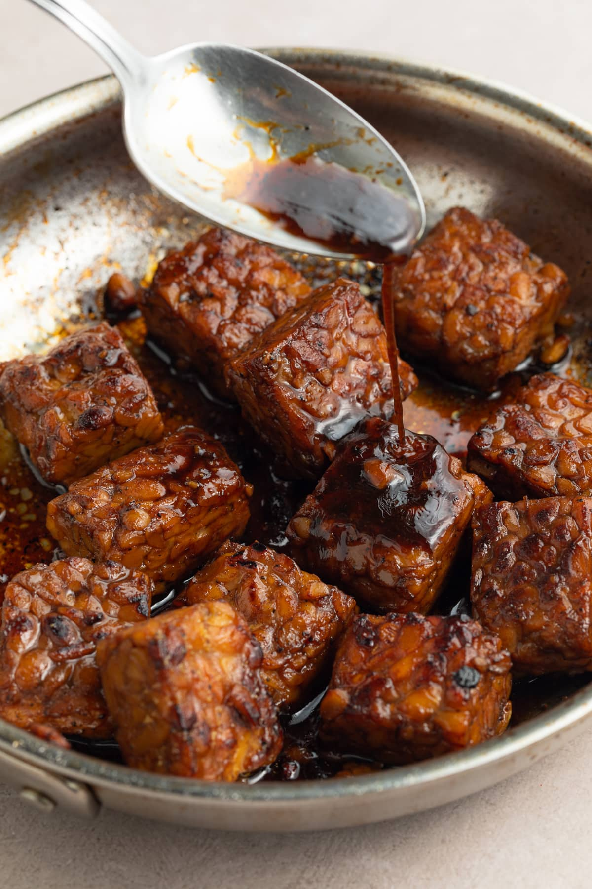

Maple Ginger Tempeh

Deliciously sweet and savory tempeh recipe... and very easy to make!
This recipe is a very simple way to make a healthy vegan entree when you don't have much time to cook
Ingredients
- 1 package tempeh
- 1/2 cup maple syrup
- 1/2 cup tamari
- 3 tbsp corn starch
- 2 tbsp diced ginger
- 1 tbsp sesame oil
- Salt and pepper to taste
Steps
- Break tempeh into bit sized chunks
- Combine syrup, tamari, sesame oil, chopped ginger, and corn starch in small bowl and then whisk to combine
- Add oil (coconut oil recommended) to large pan over medium-high heat, then add crumbled tempeh
- Cook until tempeh is browned in places, 4-5 minutes, stirring frequently
- Add salt and pepper and stir again
- Whisk maple ginger sauce once more and then add to the pan with the tempeh
- Continue cooking until sauce thickens and coats tempeh pieces, 2-3 minutes, stirring frequently
- Enjoy!
Return to homepage